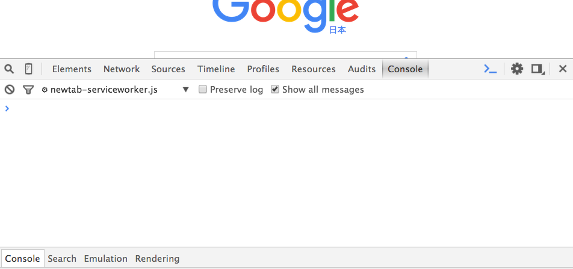
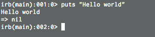
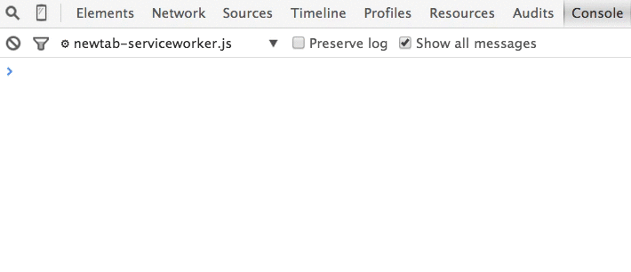

実際にJavaScriptを動かしながら、必要最低限の文法を身に付けます。
まず、JavaScriptを実際に動かしてみましょう。
Chromeのコンソールを用いると、どのページでもirbのような対話形式でJavaScriptのコマンドを実行することができます。
コンソールは、command + option + Jで立ち上げることができます。

※ページによってはコンソールにエラーメッセージ等が表示されていることもありますが、コンソールの機能は問題なく使えます。
実際にコンソールにJavaScriptのコードを入力してみましょう。
「画面に文字を出力させる」コードを入力します。Rubyでは以下のようにputsメソッドを用いて出力させていました。
1 |
puts "Hello world"
|

JavaScriptでは以下のように書きます。
以下のコードをコンソールに入力してください。
1 |
console.log("Hello world");
|
このコードによりコンソールに「Hello world」の文字列が出力されます。

なお、コンソールに「undefined」と出力されていますが、これはconsole.logの返り値を表しています。Rubyでputsメソッドの返り値がnilであるのと対照的ですね。
ちなみに、undefinedは「値が定義されていない」という意味です。
console.logメソッドの末尾にセミコロンがついていました。JavaScriptでは、一つの処理の終わりにセミコロンをつける慣習があります。実際無くても問題無く動く場合が殆どなのですが、本カリキュラムではセミコロンをつけることとします。
また、上のRubyの例を見てわかるように、Rubyでは引数の括弧を省略することができますが、JavaScriptでは括弧を省略することができません。同様に、if文でも括弧を省略することができません。
Rubyとの違いを交えて、JavaScriptの基礎文法を学びましょう。
Rubyでは以下のようにして変数を定義することができました。
1 2 3 4 |
x = 1 # 定義
x = 5 # 代入
name = "shizuka"
array = [1, 2, "a"]
|
JavaScriptでは以下のようになります。
1 2 3 4 |
var x = 1;
x = 5;
var name = "shizuka";
var array = [1, 2, "a"];
|
変数を定義する時は、var（変数という意味のvariableの略）をつける必要があります。
つけなかった場合もエラーとはなりませんが、変数のスコープが変わってきます。詳細は割愛しますが、変数の定義の際はvarを必ずつけるようにしましょう。varが必要なのは最初に定義する時だけであって、代入時など、二度目以降の登場時には必要ありません。
また、数値、文字列、配列についてはRuby同様の書き方によって定義することができます。
Rubyでは以下のようにして関数を定義することができました。
1 2 3 |
def 関数名(引数)
処理内容
end
|
JavaScriptでは以下のようになります。
1 2 3 |
function 関数名(引数) {
処理内容
}
|
書き方が若干異なるものの、構造に大きな違いはありませんね。
関数の呼び出しも含めて、違いを見てみましょう。Rubyでは以下のようになります。
1 2 3 4 5 6 |
def square(number)
puts number * number
end
number = 5
square(number)
|
JavaScriptでは以下のようになります。
※なお、コンソールでenterを入力するとコードが実行されてしまいます。関数の定義は以下の中括弧の始まりから終わりまでであり、その途中で実行するとエラーとなってしまいます。コンソールで下記のように関数を定義する場合はshift + enterにより改行をし、最後まで入力してからenterにより実行してください。
また、コピーペーストをしても問題なく実行できます。
1 2 3 4 5 6 |
function square(number) {
console.log(number * number);
}
var number = 5;
square(number);
|
さて、上記二つを見比べてみると、呼び出し方にも大きな違いは無いことがわかります。ただ、Rubyでは引数が無かった場合に、メソッド名だけでメソッドを呼び出せていたのに対し、JavaScriptでは、引数が無い場合も、以下のように空の括弧をつける必要があります。
1 2 3 4 5 |
function printHello() {
console.log("Hello");
}
printHello();
|
関数を使うことによって、処理のまとまりを作ることができ、似たような処理を何回も記述する手間を省くことや、ソースコードの可読性に繋がるという点は、RubyやJavaScriptのみならず、あらゆるプログラミング言語で共通することです。
JavaScriptでは、キーと値のまとまりであるオブジェクトというものがあります。
オブジェクトは、Rubyで言うハッシュのようなものです。
Rubyでは以下のようにしてハッシュの定義・値の取得をすることができます。
1 2 |
hash = {key1: "value1"}
hash[:key2] = "value2"
|
JavaScriptでは以下のようになります。
1 2 |
var hash = {key1: "value1"};
hash.key2 = "value2";
|
オブジェクトにおいては、キーと値のセットをプロパティと呼びます。key1, key2等のキーはプロパティ名であり、それに対応する値がプロパティの値です。
例えば、上の例において、hashのkey1プロパティの値は"value1"、key2プロパティの値は"value2"であるということが言えます。また、"value1"を指す言葉として、「hashのkey1プロパティ」という呼び方をすることが多いです。
オブジェクトのプロパティにアクセスする時は、ピリオドを使って(オブジェクト).(プロパティ名)とします。Railsで、あるtweetのtextを取得するときにtweet.textと記述して取得したのと同じような感覚ですね。
また、JavaScriptのオブジェクトはRubyのハッシュのようなものですが、違う点として、プロパティに関数（メソッド）を持つことができるということが挙げられます。
これは、JavaScriptでは、関数も値の一つとみなされていることに因ります。そのため、数値や文字列同様にプロパティに関数を持つこともでき、引数として関数を渡す、ということもできるのです。
自分でオブジェクトに対してメソッドを持たせることはあまりありませんが、もとから用意されているオブジェクト等を扱うときに、メソッドを多々使います。値の取得同様に、(オブジェクト).(メソッド名)で呼び出すことが出来ます。例えば、console.logは、consoleオブジェクトのlogプロパティのメソッドを呼び出していることを表します。
なお、関数とメソッドという言葉が出てきましたが、関数は一連の処理のかたまりのことを指す一方で、メソッドは特に何かのオブジェクトのプロパティとしての関数のことを指します。
オブジェクトは、メソッドを含む色々な値を持つことのできる箱であると覚えておきましょう。
お疲れ様でした！このカリキュラムの終わりに確認問題を解きましょう。
 大宅 誠人
大宅 誠人